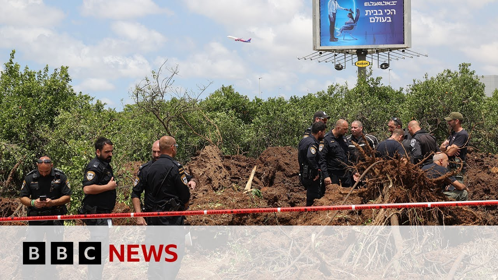

来B站一起耍【Global每日英语简报】
【也门胡塞武装导弹击中以色列本古里安机场附近 | BBC新闻】
Summary: The Houthis in Yemen claimed responsibility for a missile strike near Israel's Ben Gurion airport, injuring at least two people and briefly suspending flights. Israel is investigating the air defense failure and threatening retaliation amid plans to expand military operations in Gaza, while blocking aid and facing accusations of war crimes.
摘要： 也门胡塞武装宣称对导弹袭击以色列本古里安机场附近负责，造成至少两人受伤并短暂中断航班。以色列正调查防空系统失效并威胁报复，同时计划扩大在加沙的军事行动，封锁援助并面临战争罪指控。

⏱️ Estimated Reading Time: 13 min
The Houthis in Yemen have claimed responsibility for a missile attack that struck inside the perimeter of Bengorian airport in central Israel.
也门胡塞武装宣称对导弹袭击以色列中部本古里安机场周边负责。
According to initial reports, at least two people were hurt.
初步报告显示，至少两人受伤。
Flights were briefly suspended, but have now resumed.
航班短暂中断，现已恢复。
The Israeli military says it is investigating why air defense systems failed to intercept the missile.
以色列军方表示正在调查防空系统为何未能拦截导弹。
The country's defense minister has threatened a forceful response.
该国国防部长威胁将采取强力回应。
The developments come after Israel issued orders calling up tens of thousands of reserveists ahead of an expanded offensive in Gaza.
事态发展前，以色列已下令征召数万预备役人员，准备扩大在加沙的攻势。
According to several media outlets in the country, according to Israel's public broadcaster, the security cabinet is scheduled to meet on Sunday to approve the move.
据以色列多家媒体及公共广播公司报道，安全内阁定于周日开会批准该行动。
Israeli officials have repeatedly said they will intensify military operations in the strip if Hamas fails to release the remaining hostages.
以色列官员多次表示，若哈马斯不释放剩余人质，将加强在加沙地带的军事行动。
as well as daily air strikes.
以及持续每日空袭。
All aid has been blocked from entering the territory for two months despite international pressure on Israel to lift its blockade with warnings that intentionally starving civilians is a war crime.
尽管国际社会施压以色列解除封锁并警告蓄意让平民挨饿属战争罪，所有援助物资已被阻断进入该地区两个月。
Our Middle East correspondent Hugo Bich gave me the latest from Jerusalem.
本台中东记者Hugo Bich从耶路撒冷发回最新消息。
So this was a missile that was fired by the Houthis uh in Yemen and we've seen those images from Tel Aviv, an area near Benoron uh airport, which is Israel's main international airport uh was hit.
这是一枚由也门胡塞武装发射的导弹，我们已看到特拉维夫附近的画面，以色列主要国际机场本古里安机场周边遭袭。
We don't know whether this was a direct impact from this missile.
尚不清楚这是否为导弹直接命中。
And the authorities here are saying that there have been no serious injuries from this attack.
当地当局称此次袭击未造成重伤。
Uh the uh the authorities say at least two people have been taken to hospital uh with minor uh injuries and we had a statement from the Israeli military saying that they are investigating why this missile wasn't uh intercepted.
当局表示至少两人因轻伤送医，以色列军方声明称正调查该导弹未被拦截的原因。
This is obviously a country that has a very sophisticated air defense system with a very high success rate in intercepting missiles and and rockets.
该国显然拥有非常先进的防空系统，拦截导弹和火箭弹的成功率极高。
And we've seen that the Houthis have been firing rockets at Israel, saying that they are acting in support of Palestinians in Gaza.
我们已看到胡塞武装向以色列发射火箭弹，称此举是为支持加沙的巴勒斯坦人。
The vast majority of those missiles are intercepted by the uh Israeli military.
绝大多数此类导弹被以色列军方拦截。
And there has been some reaction from the Israeli defense minister saying that Israel is going to hit back seven times stronger.
以色列国防部长回应称将以七倍强度反击。
We've seen that there have been attacks by Israel, also by this coalition led by the United States trying to strike Houthy targets in Yemen to stop uh these attacks uh not only against Israel but also uh on ships uh in the Red Sea.
我们已看到以色列及美国领导联盟对也门胡塞武装目标的打击，试图阻止其不仅针对以色列还包括红海船只的袭击。
And Hugo, what more do we know about these reported plans to call up thousands of Israeli reser to expand the military operation in Gaza?
Hugo，关于据报道计划征召数千以色列预备役人员以扩大加沙军事行动，我们还有哪些信息？
Yeah. So the uh Israeli security cabinet is expected to meet later today and this measure is expected to be approved.
是的，以色列安全内阁预计今日晚些时候开会，该措施有望获批。
Uh there have been uh you know there has been some speculation uh that the Israeli military is uh planning an expansion of the uh military offensive of the war against Hamas in Gaza.
你知道，已有猜测称以色列军方正计划扩大在加沙对哈马斯的军事攻势。
What the Israeli authorities are saying is that they're putting pressure on Hamas to release the hostages who remain uh in captivity in Gaza.
以色列当局称正对哈马斯施压要求释放仍被扣押在加沙的人质。
We've seen that since Israel uh ended the ceasefire back in March.
我们看到自以色列三月份结束停火以来。
Uh those negotiations, the international efforts for a new deal uh not only to guarantee the release of the hostages but also uh for for a ceasefire in Gaza have failed to reach any kind of of of deal.
那些旨在确保人质释放及加沙停火的新协议国际谈判未能达成任何成果。
And uh also part of this strategy uh is this blockade on the entry of humanitarian aid into Gaza.
该战略还包括封锁人道主义援助进入加沙。
And we've seen some, you know, dramatic uh reports of of the situation in Gaza where aid agencies say that food supplies, water, medicine are running low and they've been saying that this is a policy of starvation that could amount to a war crime, something that the Israeli authorities reject.
我们已看到一些关于加沙局势的严峻报告，援助机构称食品、水和药品即将耗尽，并表示这可能是构成战争罪的饥饿政策，以色列当局对此予以否认。
Uh we've seen some protests here uh in Israel against the war.
我们看到以色列国内出现一些反战抗议。
We've seen also, you know, some former officials, military officials urging the authorities to end the war in Gaza and there has been this suspicion for quite some time that the Israeli Prime Minister Benjamin Netanyahu is prolonging the conflict to guarantee his political survival.
还看到一些前官员、军方官员敦促当局结束加沙战争，且长期以来有怀疑认为以色列总理内塔尼亚胡为保障自身政治生存而延长冲突。
So, uh again, the Israeli security cabinet expected to meet later today and approve this measure.
重申，以色列安全内阁预计今日晚些时候开会批准该措施。
Hugo Beta there. Well, I also spoke to Dr. Ha Helier from the Royal United Services Institute.
Hugo Beta报道。我还采访了皇家联合服务研究所的Ha Helier博士。
He began by giving me his analysis on the missile strike.
他首先分析了此次导弹袭击。
This was a missile that came from the Houthis in Yemen.
这是一枚来自也门胡塞武装的导弹。
Um I don't think it can be disagregated from the overall conflict of course that's going on in terms of Israel's war in Gaza.
我认为这显然无法与以色列在加沙的战争这一整体冲突割裂看待。
The Houthis have made that very clear.
胡塞武装已明确表态。
Uh of course they're a terrible group, but they're not striking just out of nowhere.
他们固然是恶劣组织，但袭击并非无端发生。
Um the question is is whether or not we will see measures to deescalate the situation comprehensively so that there wouldn't be further strikes of this nature.
问题在于我们是否会看到全面降级局势的措施以避免此类袭击再次发生。
Um or if we're going to see escalation in which case uh we're going to see uh more pain and suffering uh for the Yemenes and frankly for people throughout the region including Israelis and Palestinians.
抑或局势升级，届时也门人乃至整个地区包括以色列和巴勒斯坦民众将承受更多痛苦。
Uh what's your analysis of this expected move that thousands of reserveists are to be called up in Israel to expand the operation, the Israeli operation in Gaza?
您对以色列拟征召数千预备役人员以扩大加沙军事行动有何分析？
So I think it's been very clear for many months um that there isn't an intention from within Tel Aviv, within the Israeli government to end the war in Gaza.
我认为数月来已很清楚，特拉维夫内部、以色列政府内部无意结束加沙战争。
They've made it abundantly clear as your cor mentioned Israel ended the ceasefire back in March.
正如贵台记者所述，以色列三月份就结束了停火，其意图已非常明确。
Um and Israeli officials and Israeli ministers have uh said very clearly they do not want to end the war in Gaza until they see uh the the complete end of Hamas in Gaza.
以色列官员和部长们明确表示，除非看到哈马斯在加沙被彻底消灭，否则不会结束战争。
Um which of course is not something that any military expert thinks is possible.
这当然是任何军事专家都认为不可能实现的目标。
um the protests that you've seen um over not just the last few days but you know many months now uh from Israelis indicate that there's a great deal of public support uh in Israel among the Israeli public uh for the notion that this war is being pro prosecuted not to rescue the hostages um but to prolong Benjamin Netanyahu's rule as prime minister um and I don't think that there's really much doubt about that uh including including among, I suspect, Israeli allies as well.
不仅近日而是数月来以色列国内的抗议表明，许多公众支持一种观点，即这场战争是为延长内塔尼亚胡总理统治而非营救人质，我认为包括以色列盟友在内都对此少有怀疑。
The the the ceasefire uh proposal that was put forward by Biden and then finally implemented via a deal that involved the Biden administration and then the incoming Trump administration had phase one, phase two, phase three.
拜登提出并由拜登政府与即将上任的特朗普政府通过协议最终实施的停火提案分三个阶段。
Phase one was never truly implemented, then was violated almost from day one.
第一阶段从未真正落实，且几乎从第一天起就被违反。
Um and phase two, of course, we never entered into and there's really no suggestion that that's going to be returned to.
第二阶段我们当然从未进入，也完全没有迹象表明会重回该阶段。
There's already been a deal mentioned quite a few times over the last few months uh for all of the hostages to be released all at once in exchange for an end to the war.
过去几个月已多次提及一次性释放所有人质以换取战争结束的协议。
Israel has rejected that and I think that that's the the stance that it's going to persist on taking.
以色列已拒绝该协议，我认为其将坚持这一立场。
So we've seen repeated protests in Israel for the past 18 months calling on the hostages to be returned.
过去18个月我们看到以色列反复出现要求归还人质的抗议。
We've also increasingly seen over the past few weeks and very unusually some protests emerging in Gaza against Hamas.
过去几周我们还越来越多且异常地看到加沙出现反对哈马斯的抗议。
Um terrible suffering happening in Gaza.
加沙正发生可怕苦难。
Mhm. They hold more than 50 hostages, half of whom, it's believed, are dead in Gaza.
他们扣押着50多名人质，据信其中半数已在加沙死亡。
Why won't Hamas hand them back?
哈马斯为何不归还他们？
So, first, I don't think it's unusual that there are protests against Hamas.
首先，我认为出现反对哈马斯的抗议并不反常。
Um the the Palestinians of Gaza have a variety of political stances.
加沙巴勒斯坦人持多种政治立场。
I suspect Hamas is actually incredibly unpopular in Gaza, particularly over the past 18 months, but even before that.
我认为哈马斯在加沙极不受欢迎，尤其是过去18个月，甚至在此之前也是。
um visav why Hamas won't return the hostages for Hamas is a militant group and sees the hostages very clearly as being leverage uh the Israeli government has made it very clear that their final goal for Gaza is not simply the removal of Hamas but also the removal of the Palestinian population from Gaza it's expressed support for the Riviera plan has made it very clear that it supports the Riviera plan this new department within the Ministry of Defense uh which is set up in order to encourage uh the uh the quote unquote voluntary migration of Palestinians from Gaza.
至于哈马斯为何不归还人质——哈马斯作为武装组织明确将人质视为筹码，以色列政府已清楚表明其对加沙的终极目标不仅是清除哈马斯还包括驱逐巴勒斯坦人口，其表态支持"里维拉计划"并在国防部设立新部门以推动加沙巴勒斯坦人的"自愿迁移"。
Of course, there's nothing voluntary when you make a territory uninhabitable.
当然，当一片领土变得无法居住时，所谓"自愿"根本无从谈起。
Um so I don't think it's surprising.
因此我认为这并不令人意外。
I mean, Hamas is not a good actor by any means, but it's not surprising that they wouldn't release what they see as their leverage.
哈马斯绝非善类，但他们不会放弃自认为的筹码并不出奇。